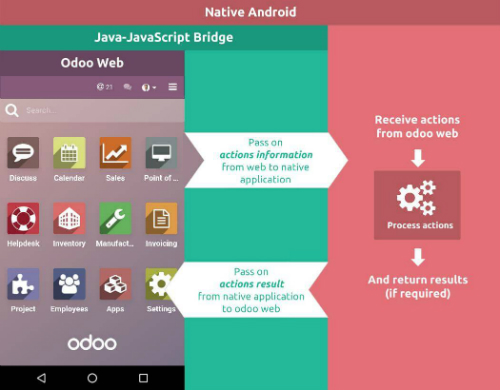
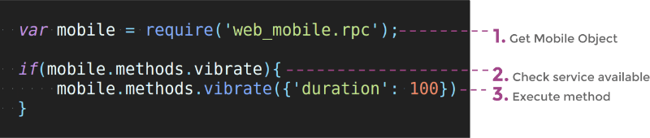

Introduction
In Odoo 10.0 we released a mobile app which allows you to access all Odoo apps (even your customized modules).
The application is a combination of Odoo Web and Native Mobile components. In other words it is a Odoo Web instance loaded inside a native, mobile, WebView container.
This page documents how you can access mobile native components like Camera, Vibration, Notification and Toast through Odoo Web (via JavaScript). For this, you do not need to be a mobile developer, if you know Odoo JavaScript API you can access all available mobile features.
Warning
These features work with Odoo Enterprise 10.0+ only
How does it work?
Internal workings of the mobile application:
Of course, it is a web page that loads on a Mobile Native Web container. But it is integrated in such a way that you can access native resources from your web JavaScript.
WebPages (Odoo Web) is on the top of each layer, where the second layer is a Bridge between Odoo Web (JS) and the native mobile components.
When any call from JavaScript is triggered it passes through Bridge and Bridge passes it to the native invoker to perform that action.
When the native component has done its work, it is passed to the Bridge again and you get the output in JavaScript.
Process time taken by the Native component depends on what you are requesting from the Native resources. For example the Camera or GPS Location.
How to use it?
Just like the Odoo Web Framework, the Mobile API can be used anywhere by getting the object from web_mobile.rpc
The mobile RPC object provides a list of methods that are available (this only works with the mobile app).
Check if the method is available and then execute it.
Methods
Note
Each of the methods returns a JQuery Deffered object which returns a data JSON dictionary
Show Toast in device
showToast()
- args (
object) -- message text to display
A toast provides simple feedback about an operation in a small popup. It only fills the amount of space required for the message and the current activity remains visible and interactive.
mobile.methods.showToast({'message': 'Message sent'});
Vibrating device
vibrate()
- args (
object) -- Vibrates constantly for the specified period of time (in milliseconds).
Vibrate mobile device with given duration.
mobile.methods.vibrate({'duration': 100});
Show snackbar with action
showSnackBar()
- args (
object) -- (required) Message to show in snackbar and action button label in Snackbar (optional)
True if the user clicks on the Action button, False if SnackBar auto dismissed after some time.Snackbars provide lightweight feedback about an operation. They show a brief message at the bottom of the screen on mobile or in the lower left corner on larger devices. Snackbars appear above all the other elements on the screen and only one can be displayed at a time.
mobile.methods.showSnackBar({'message': 'Message is deleted', 'btn_text': 'Undo'}).then(function(result){
if(result){
// Do undo operation
}else{
// Snack Bar dismissed
}
});
Showing notification
showNotification()
- args (
object) -- title (first row) of the notification, message (second row) of the notification, in a standard notification.
A notification is a message you can display to the user outside of your application's normal UI. When you tell the system to issue a notification, it first appears as an icon in the notification area. To see the details of the notification, the user opens the notification drawer. Both the notification area and the notification drawer are system-controlled areas that the user can view at any time.
mobile.showNotification({'title': 'Simple Notification', 'message': 'This is a test for a simple notification'})
Create contact in device
addContact()
- args (
object) -- Dictionary with contact details. Possible keys (name, mobile, phone, fax, email, website, street, street2, country_id, state_id, city, zip, parent_id, function and image)
Create a new device contact with the given contact details.
var contact = {
'name': 'Michel Fletcher',
'mobile': '9999999999',
'phone': '7954856587',
'fax': '765898745',
'email': 'michel.fletcher@agrolait.example.com',
'website': 'http://www.agrolait.com',
'street': '69 rue de Namur',
'street2': false,
'country_id': [21, 'Belgium'],
'state_id': false,
'city': 'Wavre',
'zip': '1300',
'parent_id': [8, 'Agrolait'],
'function': 'Analyst',
'image': '<<BASE 64 Image Data>>'
}
mobile.methods.addContact(contact);
Scanning barcodes
scanBarcode()
code from any barcodeThe barcode API detects barcodes in real-time, on the device, in any orientation.
The barcode API can read the following barcode formats:
- 1D barcodes: EAN-13, EAN-8, UPC-A, UPC-E, Code-39, Code-93, Code-128, ITF, Codabar
- 2D barcodes: QR Code, Data Matrix, PDF-417, AZTEC
mobile.methods.scanBarcode().then(function(code){
if(code){
// Perform operation with the scanned code
}
});
Switching account in device
switchAccount()
Use switchAccount to switch from one account to another on the device.
mobile.methods.switchAccount();